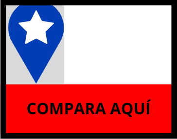

CHILE COMPARA
Chile es un país muy desigual y centralizado, por lo que en esta página podrás comparar entre regiones de Chile distintos aspectos. Los temas a relacionar son:
Educación: último nivel educativo.
Economía: ingreso medio de hombres y mujeres.
Medio ambiente: emisiones de distintos gases según la industria más contaminadora.
